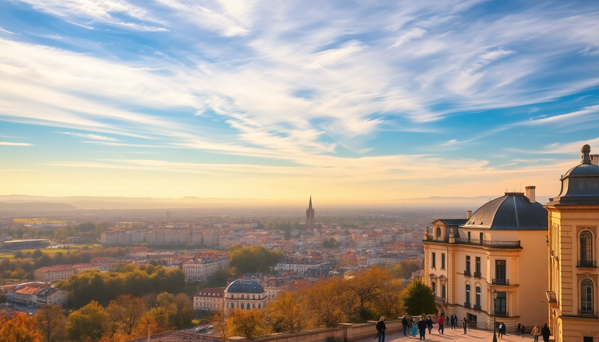

Best Cities to Visit in France: Paris, Lyon, Nice & Bordeaux

I spent three weeks hopping between these four cities last fall, and I learned fast that France isn’t a single experience—it’s four distinct ones. Paris overwhelms, Lyon feeds you, Nice lulls you into seaside laziness, and Bordeaux makes you rethink everything you thought you knew about wine country. Here’s what actually worked, what didn’t, and where I’d send a friend.
Why visit Paris, and what should you skip?
Paris is the obvious first stop, but it’s also the most exhausting. The city is huge, and trying to do the Louvre and the Eiffel Tower in one day will wreck you. I broke it into two chunks: Left Bank one day, Right Bank the next.
- Louvre Museum — I booked a skip-the-line ticket for 9 AM and still waited 20 minutes. The Mona Lisa is a scrum. The Winged Victory and Venus de Milo are worth the shuffle.
- Le Marais neighborhood — My favorite area for walking. Rue des Rosiers has falafel at L’As du Fallafel that justifies the queue. Avoid the overpriced souvenir shops on Rue de Rivoli.
- Montmartre — Sacré-Cœur has a great view, but the square below is a gauntlet of bracelet-sellers. Go at 7 AM instead.
- Hotel Le Six in Saint-Germain — Small rooms, but the location near Notre-Dame and the metro (line 4) made it worth it. Breakfast is a €22 add-on I’d skip for a café croissant at Carette on Place du Trocadéro.
- Metro tip — Buy a carnet of 10 tickets at the machine. Single tickets are a waste.
Honest take: the Eiffel Tower is better from the Trocadéro gardens than from the top. Save the climb for later.
Is Lyon worth a detour from Paris?
Yes, and it’s only two hours on the TGV from Gare de Lyon. Lyon is smaller, cheaper, and the food scene is genuinely better than Paris. I spent three days here and ate my way through the city.
- Presqu’île district — The peninsula between the Rhône and Saône rivers. Bouchon Tupin serves a traditional Lyonnais coq au vin that ruined me for all others. Reservations required.
- Vieux Lyon (Old Town) — Renaissance alleys called traboules let you cut through buildings. Free and fascinating. Café du Soleil on Rue Saint-Jean does a €15 lunch menu with a glass of Beaujolais.
- Halles de Lyon Paul Bocuse — Indoor food market. I bought a bag of pralines (pink candied almonds) and ate oysters at Chez Richard. Not cheap, but worth it.
- Hotel Carlton Lyon — Mid-range, on Rue de la République. Walking distance to Bellecour square. Rooms are dated but clean, and the front desk helped me book a cooking class at L’Atelier des Chefs.
- Getting around — The metro is efficient. Line D runs through Part-Dieu station. I used the Lyon City Card for free museum entry, but only if you plan to hit three sites.
Overrated? The Basilica of Notre-Dame de Fourvière. The view from the hill is great; the church interior is cold and touristy.
When is the best time to visit Nice?
I hit Nice in mid-September, and it was perfect—crowds thinned, sea warm enough to swim, and hotel prices dropped 30% from August. Summer is a furnace of cruise-ship tourists. Winter is quiet but many beach restaurants shut.
- Promenade des Anglais — The iconic seafront walk. Rent a bike from Vélo Bleu (€5 for a day) and ride east to the port. The pebble beach is free, but rent a mat from Castel Plage if you want comfort.
- Old Town (Vieux Nice) — Narrow streets with Cours Saleya market every morning except Monday. The socca (chickpea pancake) at Chez Pipo is the real deal. Avoid the tourist-trap restaurants with menus in six languages.
- Hotel La Pérouse — Perched on a hill overlooking the Baie des Anges. Rooms have private terraces. The walk down to the beach is steep, but the pool makes up for it. Book directly for better rates.
- Day trip to Villefranche-sur-Mer — 10 minutes by train from Nice-Ville station. Quieter, smaller, and the old town is gorgeous. Swim at Plage des Marinières.
- Bus to Èze — Line 82 from the bus station takes you up to the hilltop village. The Jardin Exotique has a view that stretches to the Italian border. Skip the perfume factories.
Honest take: Nice is a base, not a destination. Three days is enough unless you’re beach-bumming.
How do you get around Bordeaux without a car?
Bordeaux is flat, walkable, and has a tram system that puts most US cities to shame. I didn’t miss having a car once.
- Tram line C — Runs from the train station (Gare Saint-Jean) to the city center in 15 minutes. Tickets are €1.70. Buy a 10-trip card at the machine.
- Place de la Bourse — The famous water mirror (Miroir d’Eau) is best at sunset. It’s a shallow pool that kids splash in. No entrance fee.
- La Cité du Vin — Wine museum that’s actually fun. The €22 ticket includes a glass of wine at the rooftop bar. I’d skip the guided tour and just wander the exhibits.
- Hotel de Sèze — A boutique hotel on the edge of the Saint-Pierre district. My room had exposed stone walls and a view of the Garonne River. Breakfast is a buffet with local cheeses and canelés.
- Restaurant Garopapilles — Michelin-starred but not stuffy. The €45 lunch menu is a steal. Try the duck with Sauternes sauce.
- Wine bar tip — L’Intendant on Place de la Bourse has a spiral staircase of bottles. Ask for a glass of Saint-Émilion and stand at the bar.
Overrated? The Dune du Pilat is a 45-minute bus ride away and looks like a sand dune. Cool if you’ve never seen one, but not a must.
What are the best day trips from each city?
Each city has a killer day trip that doesn’t require a rental car.
- From Paris: Versailles — RER C from Saint-Michel station to Versailles-Château-Rive-Gauche. 40 minutes. Book the Passport ticket for the gardens. The Hall of Mirrors is mobbed by 11 AM. Go straight to the Queen’s Hamlet instead.
- From Lyon: Beaujolais wine country — Les Vins de Georges runs half-day tours from Lyon Part-Dieu. €80 includes tastings at three domaines. The Gamay grape shines here.
- From Nice: Monaco — Train from Nice-Ville to Monaco-Monte-Carlo. 25 minutes. The casino is free to enter if you’re over 18. The Oceanographic Museum is better than the aquarium in Nice.
- From Bordeaux: Saint-Émilion — TER train from Gare Saint-Jean to Saint-Émilion. 35 minutes. Walk up to the Monolithic Church and taste at Château La Gaffelière. Avoid the tourist train.
FAQ
What is the best way to travel between these four cities? I used the TGV (high-speed train) for every leg. Paris to Lyon is 2 hours, Lyon to Nice is 4.5 hours, and Nice to Bordeaux takes 6 hours with a change in Marseille. Book tickets on SNCF Connect at least two weeks ahead—prices double last-minute. For the Nice-to-Bordeaux leg, consider a flight from Nice Côte d’Azur to Bordeaux-Mérignac (1.5 hours, often €40-60 on easyJet). The train is scenic but long.
How many days should I spend in each city? Three days in Paris, two in Lyon, three in Nice (including day trips), and two in Bordeaux. That’s 10 days total. If you’re short on time, drop Nice to two days and skip the day trips. I wouldn’t cut Lyon—it’s the most efficient food stop.
Is it worth buying a France rail pass? Only if you’re doing more than four cities. The Eurail France Pass (3 days in a month for €150) saved me money when I added a stop in Avignon. But for just Paris, Lyon, Nice, and Bordeaux, point-to-point tickets are cheaper if booked early. I spent €180 total on four train legs by booking 30 days out.
Conclusion
- Paris is a mandatory stop for the landmarks, but budget two full days and skip the overhyped tourist traps like the Moulin Rouge.
- Lyon is the food capital—eat at a bouchon, visit the Halles, and take a wine tour to Beaujolais.
- Nice works best as a relaxed base for the Riviera with day trips to Villefranche and Monaco.
- Bordeaux is walkable, tram-friendly, and the wine museum is worth the entry fee.
- Book trains early and pack for variable weather—I got rain in Lyon and sun in Nice in the same week.